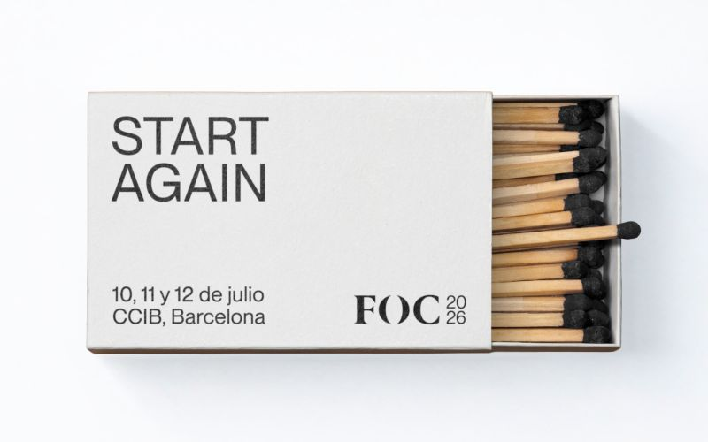
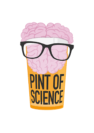
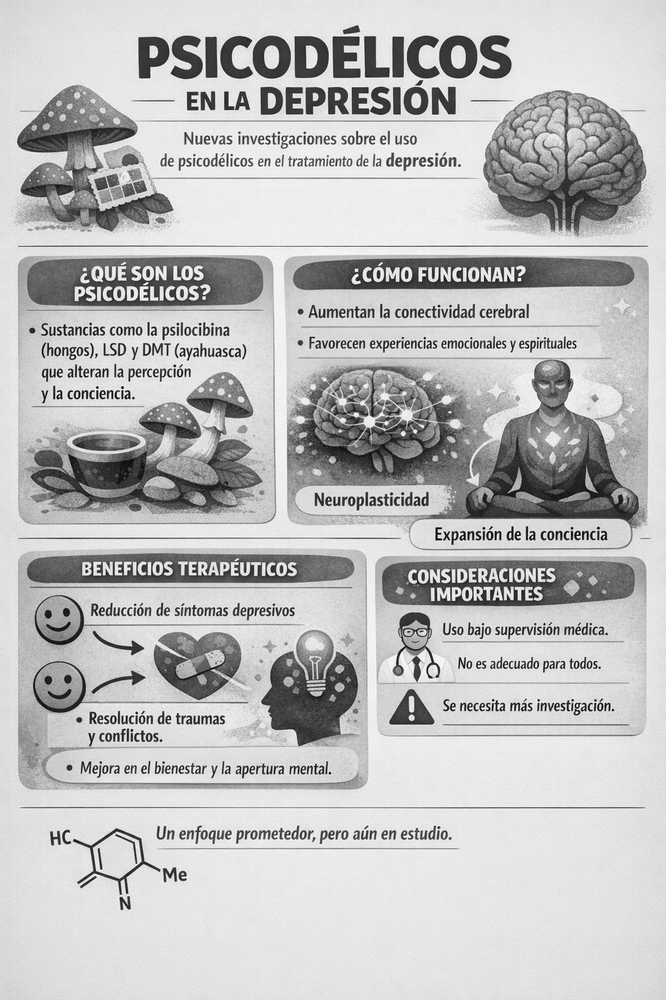
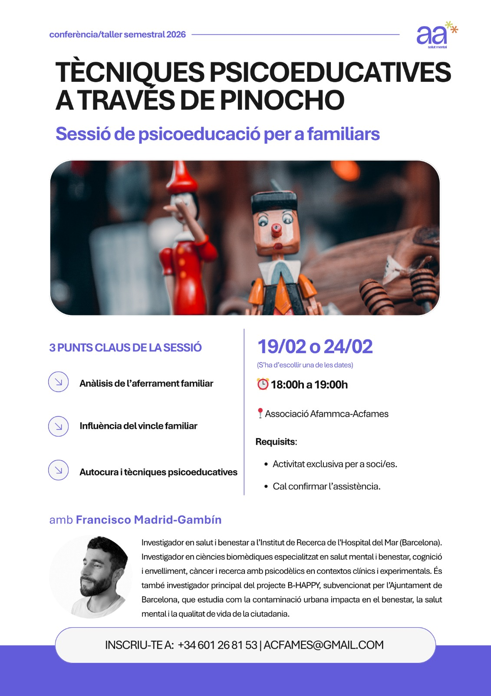
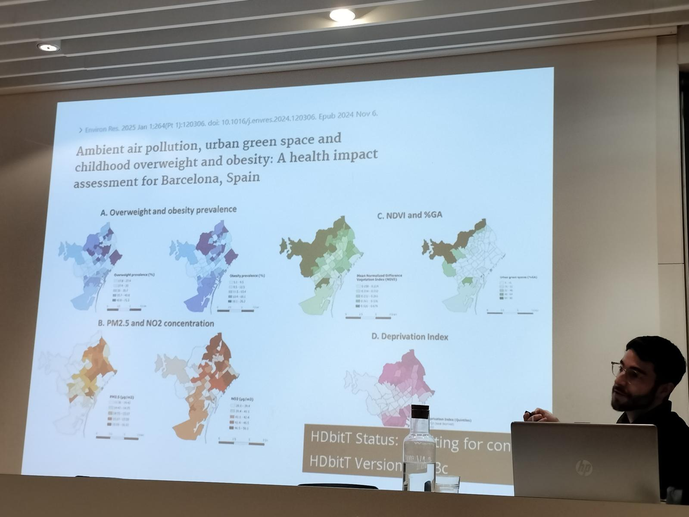
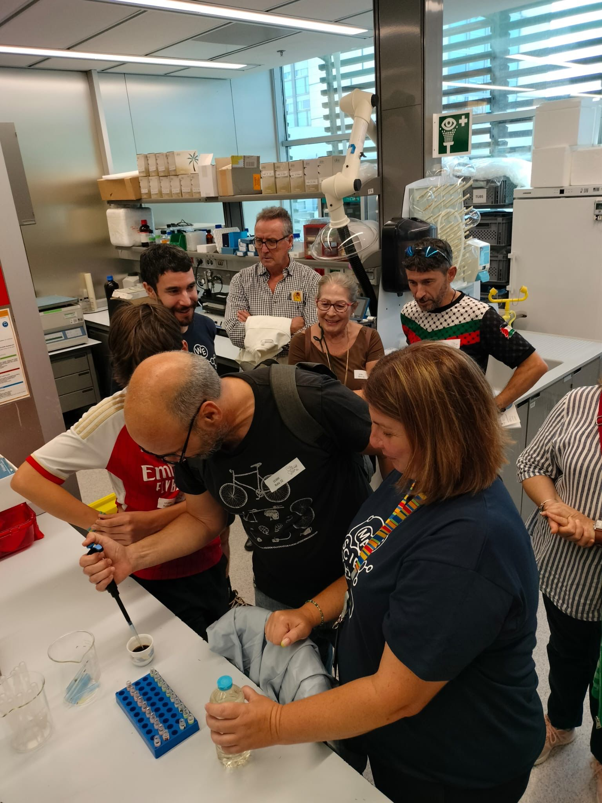
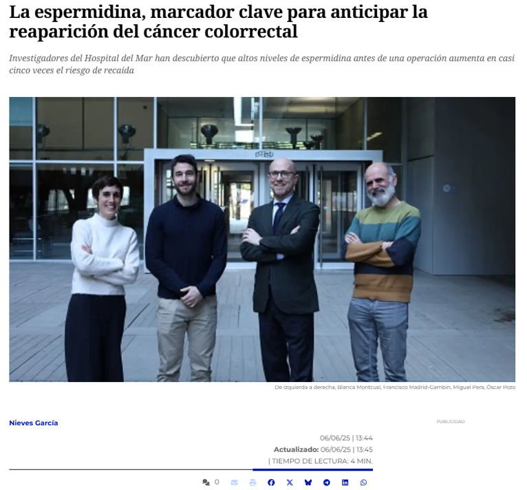

Comunicación Científica y Divulgación Pública
Adapto investigación biomédica compleja en narrativas accesibles — sin comprometer el rigor científico y, de vez en cuando, con una pizca de humor bien colocada.
Cronología de Charlas y Actividades de Divulgación
2026
Festival of Consciousness (FOC 2026)
10–12 Julio 2026 ### Integromics mente-cerebro-cuerpo de la experiencia con ayahuasca
Una presentación científica que explora los estados alterados de conciencia (mente) mediante metabolómica periférica (bioquímica del cuerpo), neuroimagen (conectoma del cerebro) y modelado a nivel de sistemas. La charla conecta la experiencia subjetiva con dinámicas biológicas medibles, abordando cómo los cambios en redes cerebrales y en el metabolismo periférico pueden reflejar procesos de reorganización neurobiológica asociados a la expansión de la conciencia. El objetivo es tender puentes entre la fenomenología de la experiencia psicodélica y los biomarcadores cuantificables en el cerebro y el cuerpo.
https://thefestivalofconsciousness.org/

Pint of Science 2026 – Barcelona 20 Mayo 2026
La Bioquímica del Bienestar
Una conversación accesible pero rigurosa sobre las hormonas del estrés, la regulación emocional y las bases biológicas del bienestar. Un recordatorio de que los neurotransmisores no son místicos — aunque sí fascinantes.

Las emociones de Pinocho. Un cuento de trauma y resiliencia desde la neurociencia
Centro Cívico Josep M. Trias Peitx
15 April 2026
Pinocho no es solo un cuento de hace dos siglos, es una historia atemporal sobre cómo aprendemos a gestionar las emociones. Habla de lo que hacemos cuando el mundo no se siente seguro; cuando el afecto y la validación por quienes somos llegan tarde… o llegan con una condición: ser “un niño de verdad”. La vergüenza y las expectativas aprietan, y la verdad cuesta. En esta charla, que combina divulgación científica y storytelling, las mentiras de Pinocho y su deseo de ser un niño de verdad se convierten en metáforas vivas para hablar de emociones, trauma y regulación: cómo, en el cerebro, la amígdala detecta peligro y la corteza prefrontal intenta poner palabras, freno y sentido; cómo se construye la calma y qué precio pagamos por sobrevivir sin vínculos de apego seguro.
El viaje se sostiene en tres acompañantes que dejan marca:
el Grillo Parlante, la norma y la moral cuando llegan sin vínculo (y el impulso de rechazar a la autoridad).
Geppetto, el amor sin regulación y la inversión de roles cuidador-niño, con la alarma encendida como si el peligro fuese constante.
el Hada Azul, la validación intermitente y el juicio, que siembra confusión y deja vivencias de abandono.
Y, como en el cuento, el final no es un “final feliz” cualquiera, es la posibilidad de aprender a autorregularse. Un formato accesible, reflexivo y participativo que une (neuro)ciencia, cultura y experiencia cotidiana para salir con más comprensión y autocuidado.
El cuerpo también es arquitectura
Centro Cívico Joan Oliver – Pere Quart
13 Mayo 2026
Una conferencia conjunta que exploró cómo el diseño urbano influye en la regulación emocional y en el funcionamiento del cerebro. A través de la neurociencia, la fisiología del estrés y la experiencia cotidiana de la ciudad, discutimos cómo el entorno construido —calles, densidad urbana, ruido, espacios verdes o arquitectura— termina incorporándose biológicamente en nuestro organismo.
La charla se enmarca en “Barcelona Capital Mundial de la Arquitectura 2026 (UNESCO-UIA)”, un año dedicado a reflexionar sobre cómo la arquitectura y el urbanismo pueden contribuir a ciudades más sostenibles y saludables.
Desde esta perspectiva, la sesión propone una mirada complementaria desde la biomedicina: si la arquitectura diseña los espacios donde vivimos, la biología revela cómo esos espacios terminan modulando nuestro sistema nervioso, nuestras hormonas del estrés y nuestra salud mental. En otras palabras, la ciudad no solo se habita: también se inscribe en el cuerpo.
Psicodélicos: ¿viaje espiritual o herramienta clínica en salud mental?
Proyecto Salud y Ciencia en las bibliotecas de Barcelona
18 June 2026
Durante décadas, los psicodélicos han sido asociados al misticismo, la contracultura y el “viaje interior”. Hoy, la ciencia los está llevando al laboratorio y al hospital. En esta charla recorreremos qué dice realmente la evidencia sobre sustancias como la psilocibina o la ayahuasca en depresión resistente, rigidez mental y otros trastornos emocionales. Un viaje entre neurobiología, experiencia subjetiva y datos reales, para separar el mito de la herramienta clínica.

Modulación emocional en el estrés urbano barcelonés
Centro Cívico Can Deu
3 Junio 2026 Una exploración del estrés urbano crónico y su impacto en la regulación endocrina, integrando conocimientos de neurociencia con la experiencia cotidiana de vivir en la ciudad.
Conciencia, Emociones y Neurobiología
Las emociones de Pinocho
AFAMMCA – Associació de Familiars de Malalts Mentals de Catalunya 19 & 24 Febrero 2026 Un taller que explora la regulación emocional, el trauma y la resiliencia a través de la narrativa y la neurociencia. A partir de la metáfora de Pinocho, la sesión transforma conceptos neurobiológicos complejos en experiencias humanas reconocibles y cercanas.

2025
Contaminación y Salud
Ciclo de conferencias “Salut i Ciència” Biblioteca Gòtic – Andreu Nin, Barcelona 19 Noviembre 2025
Una conferencia pública sobre cómo la contaminación ambiental impacta en la biología humana, con especial atención al embarazo y a la vulnerabilidad durante las primeras etapas de la vida. La sesión conectó los mecanismos biológicos de la exposición ambiental con los desafíos de la salud pública en entornos urbanos.
Hormonas en peligro: la contaminación urbana en la salud maternoinfantil
Visions de la Ciència – Ciència, Ciutat i Recerca Jove 10 Noviembre 2025 UUna conferencia integradora que conecta la exposición ambiental, las hormonas del estrés y la salud maternoinfantil en entornos urbanos.
Ver Ciencia, Ciutat i Recerca Jove

“Repte Oh Europa!” – Programa BESA
Hospital del Mar 13 Octubre – 9 Noviembre 2025 Miembro del equipo ganador “Metabollitos” en una iniciativa de promoción de la salud orientada a fomentar la actividad física y los hábitos saludables en la vida diaria. Un recordatorio de que la comunicación científica también comienza con el ejemplo.
Más información aquí
Ciencia Abierta y Participación Comunitaria
OpenPRBB – Taller de Metabolómica
Parc de Recerca Biomèdica de Barcelona 3 Octubre 2025 Participación en el taller del Applied Metabolomics Group durante OpenPRBB, un evento pensado para acercar la investigación biomédica a la ciudadanía. Los visitantes pudieron interactuar directamente con experimentos de metabolómica y conocer de primera mano cómo se desarrollan los flujos de trabajo en investigación científica.

Apariciones en Medios
Nuestra investigación sobre biomarcadores que predicen el riesgo de recurrencia en cáncer colorrectal en los medios de comunicación a nivel nacional:
- Nota de Presan Hospital del Mar
- Ara
- La Vanguardia
- Telecinco
- La Razón
- El Debate
- Infosalus
- Europa Press
- El Economista
